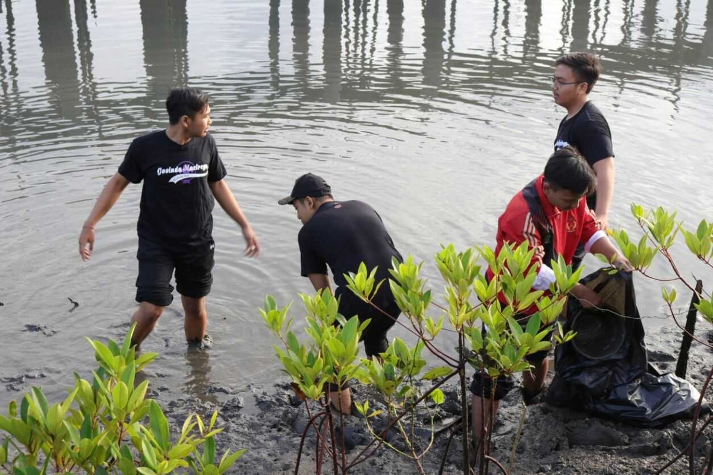

Lingkungan Pantai
Lingkungan Pantai adalah
Berita Lingkungan Pantai
1. KEBERSIHAN PANTAI PANJANG KOTA BENGKULU
Menjaga kebersihan pantai sangatlah penting. Pantai yang nyaman akan memberi kesan indah dan menarik.
Semakin indah suatu pantai, maka akan semakin ramai orang-orang yang akan mengunjungi pantai tersebut.
Hal ini memungkinkan terjadinya kerusakan di lingkungan sekitar pantai terutama kebersihanya.
Untuk itu ada beberapa langkah yang harus dilakukan untuk menjaga kebersihan pantai.
Langkah pertama yang harus dilakukan untuk menjaga kebersihan pantai adalah dengan
menyediakan tempat sampah. Tempat sampah di letak ditempat yang strategis.
Misalnya di kantin penjualan makanan, ditempat-tempat umum, atau ditempat-tempat keramaian
Langkah kedua adalah dengan menyediakan petugas kebersihan yang memadai.
Petugas kebersihan bukan hanya berfungsi sebagai penyapu, pemungut atau mengelola sampah.
Tapi juga berfungsi sebagai pengingat atau dalam kata lain berani menegur orang yang sengaja membuang sampah sembarangan.
Selanjutnya langkah yang ketiga, menyadarkan orang yang berkunjung kepantai tetap menjaga kebersihan dengan memansang poster atau spanduk di tempat-tempat tertentu.
Tulisannya jelas dan mudah terlihat. Poster atau spanduk itu berisi peringatan bahayanya membuang sampah sembarangan.
Langkah yang terakhir, pemberian sanksi atau hukuman kepada pengunjung yang membuang sampah sembarangan.
Biasanya setiap pemerintah daerah akan mengeluarkan sanksi mengenai hukuman bagi pembuang sampah sembarangan.
Perda itu hendaklah benar-benar diberlakukan bagi masyarakat atau siapapun pengunjung yang menyalahi aturan kebersihan khususnya di pantai
2.
Acara kegiatan masyarakat, organisasi untuk Menjaga Lingkungan Pantai
Tabel kegiatan Lingkungan
| Nomer |
Kegiatan |
tanggal |
Lokasi Pantai |
| 1. |
Pembersihan sampah dipesisir dilakukan masyarakat sekitar |
04 february 2022 |
Pantai randusangan |
| 2. |
Penanaman tumbuhan bakau oleh peduli lingkungan |
19 juli 2025 |
Pantai Cemara |
| 3. |
acara bersih bersih laut |
30 november 2022 |
pantai pacitan lamongan |
1. Kegiatan Penanaman tumbuhan Bakau di Pantai Cemara

Kegiatan ini mulai pada tanggal 15/12/2019 hari Sabtu. kegiatan penanaman tanaman bakau yang dilakukan oleh organisasi green environment jakarta.
Dan tidak hanya anggoota green environment, para aparat, serta generasi muda yaitu anggota saka bhayangkara yang juga ikut serta dalam kegiatan tersebut.
acara kegiatan ini dimulai pada pukul 08.00 wib yang berlokasi di pantai cemara sawojajar. acara kegiatan tersebut adalah dimana ada sesi perkenalan satu sama lain
Setelah sesi perkenalan masing - masing acara penanaman tanaman bakau pada area sisi pantai kosong.